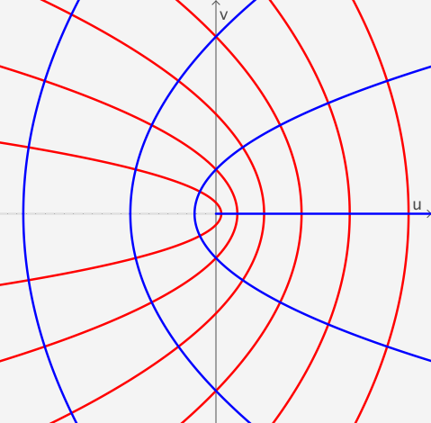

Mapeo Conforme
Sea $w=f(z)$ una aplicación compleja definida en un dominio $A.$ Consideremos dos curvas suaves $C_1$ y $C_2$ en $A$ que se intersectan en $z_0$ y tienen una orientación fija. Sean $z_1(t)$ y $z_2(t)$ parametrizaciones de $C_1$ y $C_2$ tal que $z_1(t_0) = z_2(t_0) = z_0,$ y tal que las orientaciones en $C_1$ y $C_2$ correspondan a los valores crecientes del parámetro $t.$ Dado que $C_1$ y $C_2$ son suaves, los vectores tangentes $z_1' = z_1'(t_0)$ y $z_2' = z_2'(t_0)$ son ambos diferentes de cero. Entonces, $\text{arg}\left(z_1'\right)$ y $\text{arg}\left(z_2'\right)$ representan los ángulos entre los vectores de posición de $z_1'$ y $z_2',$ respectivamente, y el eje \( x \) positivo.
Observación 1: Aquí consideraremos un sólo valor de $\text{arg}\left(z\right).$ Para mayores detalles véase El Argumento Principal.
")
|
")
|
Definimos el ángulo $\theta$ entre $C_1$ y $C_2$ en $z_0$ como el valor de \begin{eqnarray}\label{theta-angle} \text{arg}\left(z_2'\right) - \text{arg}\left(z_1'\right) \end{eqnarray} en el intervalo $[0, \pi],$ siempre que podamos rotar $z_1'$ en sentido antihorario alrededor de $z_0$ mediante el ángulo $\theta$ hasta $z_2'.$ En el caso de que se necesite una rotación en sentido horario, entonces $-\theta$ es el valor de (\ref{theta-angle}) en el intervalo $(-\pi, 0).$ En cualquiera de los casos, vemos que (\ref{theta-angle}) proporciona tanto la magnitud como el sentido del ángulo entre $C_1$ y $C_2$ en $z_0.$

Supongamos ahora que, bajo la aplicación $w = f(z),$ las curvas $C_1$ y $C_2$ en el plano $z$ se mapean en las curvas $\Gamma_1$ y $\Gamma_2$ en el plano $w,$ respectivamente. Debido a que $C_1$ y $C_2$ se intersectan en $z_0,$ debemos tener que $\Gamma_1$ y $\Gamma_2$ se intersectan en $f(z_0).$ Si $\Gamma_1$ y $\Gamma_2$ son suaves, entonces el ángulo entre $\Gamma_1$ y $\Gamma_2$ en $f(z_0)$ se define de manera similar como el ángulo $\phi\in [0, \pi]$ entre los vectores tangentes $w_1'$ y $w_2'$ definidos de manera análoga. Decimos que los ángulos $\theta$ y $\phi$ son iguales en magnitud si $\theta = \phi.$

|

|
En el plano $z,$ el vector $z_1',$ cuyo punto inicial es $z_0,$ puede rotarse mediante el ángulo $\theta$ hasta el vector $z_2'.$ Por supuesto, esta rotación en el plano $z$ puede ser en dirección antihoraria o en dirección horaria.


De manera similar, en el plano $w,$ el vector $w_1',$ cuyo punto inicial es $f(z_0),$ puede rotarse en dirección antihoraria o en dirección horaria mediante un ángulo de $\phi$ hasta el vector $w_2'.$ Si la rotación en el plano-$z$ es en la misma dirección que la rotación en el plano-$w,$ decimos que los ángulos $\theta$ y $\phi$ son iguales en sentido.
Ahora que hemos establecido la terminología con respecto a la magnitud y el sentido de un ángulo, estamos en posición de introducir el concepto de mapeo conforme. Decimos que la aplicación $w=f(z)$ es conforme en un punto $z_0$ en $A$ si para cada par de curvas suaves orientadas $C_1$ y $C_2$ en $A,$ que se intersectan en $z_0,$ el ángulo entre $C_1$ y $C_2$ en $z_0$ es igual al ángulo entre las curvas imagen $\Gamma_1$ y $\Gamma_2$ en $f(z_0)$ tanto en magnitud como en sentido.
También utilizaremos el término mapeo conforme para referirnos a una aplicación compleja $w = f(z)$ que es conforme en $z_0.$ Además, si $w = f(z)$ mapea un dominio $A$ en un dominio $B$ y si $w = f(z)$ es conforme en cada punto de $A,$ entonces llamamos a $w = f(z)$ un mapeo conforme de $A$ en $B.$
Funciones analíticas
Una propiedad geométrica notable que poseen todas las funciones analíticas complejas es que, en puntos no críticos, preservan los ángulos y, por lo tanto, definen mapeos conformes.
Deseamos probar que el ángulo $\theta$ entre $C_1$ y $C_2$ en $z_0$ es igual al ángulo $\phi$ entre $\Gamma_1$ y $\Gamma_2$ en $f(z_0)$ tanto en magnitud como en sentido.
Podemos asumir, renumerando $C_1$ y $C_2$ si es necesario, que $z_1'=z_1'(t_0)$ puede rotarse en sentido antihorario alrededor de $z_0$ mediante el ángulo $\theta$ hasta $z_2'=z_2'(t_0).$ Entonces, utilizando (\ref{theta-angle}), sabemos que \[ \theta = \text{arg}\left(z_2'\right) - \text{arg}\left(z_1'\right) \] en el intervalo $[0,\pi].$
Usando la regla de la cadena, tenemos que \begin{eqnarray*} w_1' = w_1'(t_0)= f'\left(z_1\left(t_0\right)\right)\cdot z_1'\left(t_0\right)= f'\left(z_0\right)\cdot z_1' \end{eqnarray*} y \begin{eqnarray*} w_2' = w_2'(t_0)= f'\left(z_2\left(t_0\right)\right)\cdot z_2'\left(t_0\right)= f'\left(z_0\right)\cdot z_2'. \end{eqnarray*}
Dado que $C_1$ y $C_2$ son suaves, tanto $z_1'$ como $z_2'$ son distintos de cero. Además, tenemos que $f'\left(z_0\right)\neq 0,$ y por lo tanto, tanto $w_1'$ como $w_2'$ son distintos de cero. Ahora, el ángulo $\phi$ entre $\Gamma_1$ y $\Gamma_2$ en $f(z_0)$ tiene como un valor
Observación 2: El teorema anterior establece que una transformación es conforme en $z_0$ si $f$ es analítica y $f'(z_0)\neq 0.$ Tal transformación es, de hecho, conforme en cada punto de alguna vecindad de $z_0.$ Esto se debe a que debe ser analítica en una vecindad de $z_0;$ y dado que su derivada $f'$ es continua en esa vecindad, también existe una vecindad de $z_0$ en donde $f'(z_0)\neq 0.$
Ejemplos
Ahora, con ayuda del Teorema 1, es relativamente sencillo determinad cuando una función analítica es conforme.
Ejemplo 1: El mapeo $w = e^z$ es conforme en todo el plano $z$ ya que $(e^z)'= e^z \neq 0$ para cada $z.$ Consideremos cualquier par de líneas $x = c_1$ y $y = c_2$ en el plano $z,$ la primera con dirección hacia arriba y la segunda dirigida hacia la derecha. Las imágenes bajo el mapeo $w = e^z$ son un círculo orientado positivamente centrado en el origen y un rayo que parte del origen, respectivamente. Como se ilustra en la Figura 7, el ángulo entre las líneas en su punto de intersección es un ángulo recto en la dirección negativa, y lo mismo es cierto para el ángulo entre el círculo y el rayo en el punto correspondiente en el plano $w.$

Ejemplo 2: La función $f(z)=z^2$ no es conforme en $z_0=0.$ La explicación es, por supuesto, que $z_0=0$ es un punto crítico de $f,$ es decir, $f'(0)=0.$ Sorprendentemente, el mapeo preserva ángulos en todas partes, excepto en este punto. Por ejemplo, consideremos el semiplano derecho $\{\textbf{Re}(z)>0\}.$ Esta región es mapeada por $w=z^2$ de manera conforme sobre el plano cortado $\mathbb C \setminus (-\infty,0],$ como se ilustra en la Figura 8. ¿Puedes pensar en otra región donde $w=z^2$ sea conforme?

|
 |
Un mapeo que preserva la magnitud del ángulo entre dos curvas suaves pero no necesariamente el sentido se denomina un imapeo isogonal.
Ejemplo 3: El mapeo $w = \conj{z}$ es una reflección del eje real. El mapeo es isogonal pero no conforme.
Consideremos, por ejemplo, las curvas $C_1$ y $C_2$ dadas por

|

|
Las curvas imagen están parametrizadas por
El ángulo entre $\Gamma_1$ y $\Gamma_2$ en $w_0$ es $\phi=\pi/4.$ Así, los ángulos $\theta$ y $\phi$ son iguales en magnitud. Sin embargo, dado que la rotación a través de $\pi/4$ del vector $z_1'$ sobre $z_2'$ debe ser en sentido antihorario, mientras que la rotación a través de $\pi/4$ de $w_1'$ sobre $w_2'$ debe ser en sentido horario, concluimos que $\theta$ y $\phi$ no son iguales en sentido.
Por lo tanto, $w=\conj{z}$ no es conforme.
En el applet de abajo puedes explorar el efecto de algunas transformaciones sobre una región. En particular, el applet comienza con un cuadrado definido como $S=[-0.5,0.5]\times[-0.5,-1.5].$ Primero, selecciona una transformación y observa cómo se transforma la región $S$. Luego, modifica esta región arrastrando los puntos de las esquinas del cuadrado. ¿Qué notas? ¿Qué preguntas pueden surgir?